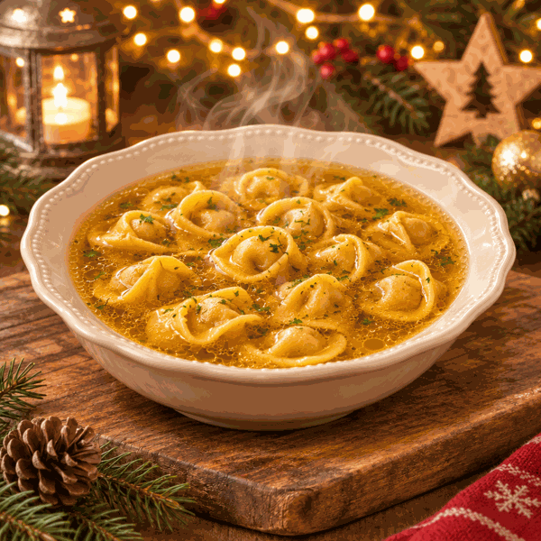

Todas as receitas › Gubbio
As Festas de Tavolata: Gubbio
Cappelletti no caldo
Na Úmbria, como em boa parte do centro da Itália, o almoço de Natal muitas vezes começa com cappelletti no caldo de capão, o galo criado especialmente para as festas.
Porções6
Preparo1 h 30 min
Cozimento3 h 4 min
DificuldadeDifícil
Alérgenos: Glúten, Ovos, Leite, Aipo

Salvar no PinterestIngredientes
- Capão (para o caldo) · 1
- Cebola · 1
- Cenouras · 2
- Salsão · 1 talo
- Farinha de trigo · 300 g
- Ovos (massa) · 3
- Lombo de porco · 150 g
- Parmesão ralado · 80 g
- Ovo (recheio) · 1
- Noz-moscada · 1 pitada
Passo a passo
- Caldo: coloque o capão em água fria com a cebola, as cenouras e o salsão, cozinhe em fogo baixo por cerca de 3 horas e coe.
- Recheio: doure o porco em pedaços e depois pique bem fino com um pouco da carne do capão cozido; junte parmesão, ovo e noz-moscada.
- Sove a farinha com os ovos, abra uma massa fina e corte quadrados de 4 cm. Coloque um pouco de recheio no centro, feche em triângulo e una as pontas em forma de chapéu.
- Cozinhe os cappelletti no caldo de capão fervendo por 3 a 4 minutos e sirva com parmesão.
A dica do chef. Não jogue fora o capão cozido: com uma salada ou um pouco de mostarda, vira o prato principal do almoço.
Prepare esta receita também em Tavolata
No jogo você combina ingredientes, completa pedidos e restaura cidades italianas, de Firenze a Milano. Grátis, com receitas verdadeiras no Livro de receitas.
Baixar na App Store